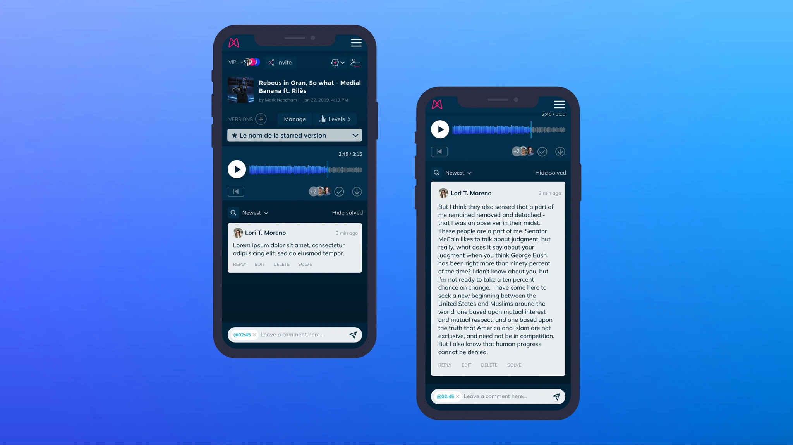
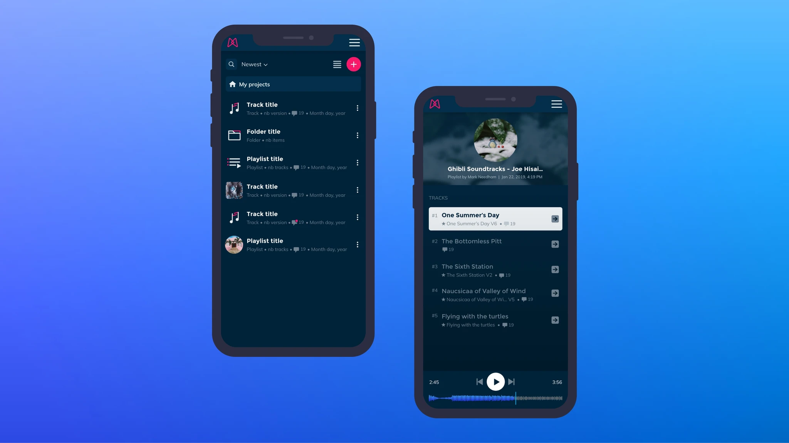
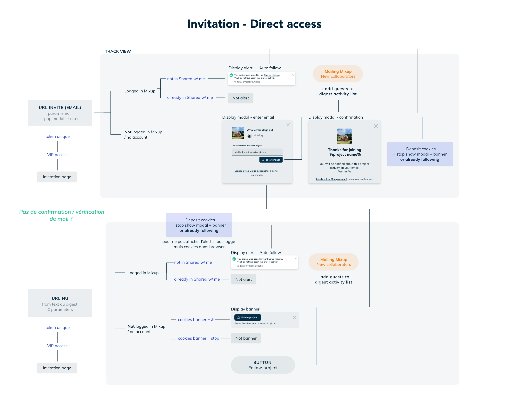
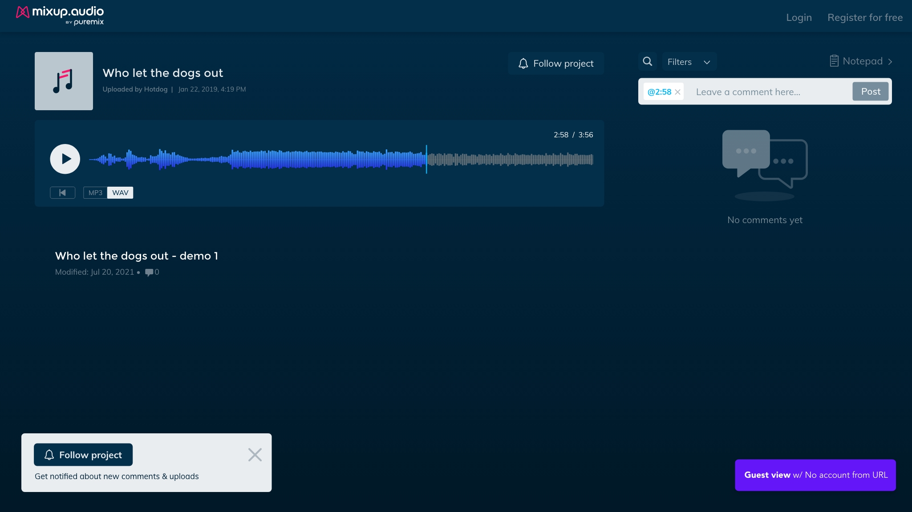
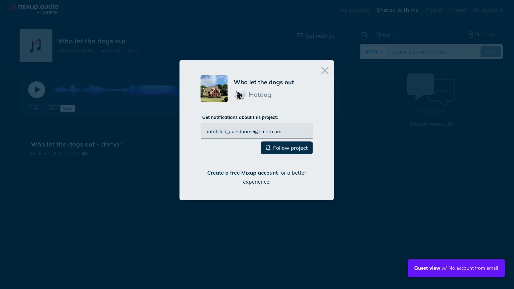
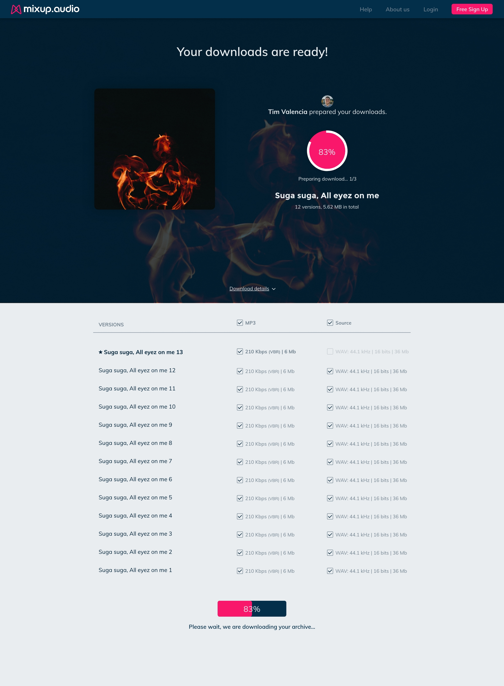

Chapter 1 — 0 to 1
Mixup is a SaaS built by the founders of Puremix. Think Google Docs for music — a shared workspace where audio engineers upload tracks, collect timestamped feedback, and manage versions with their clients.
The founder is a Grammy-nominated engineer who has worked with Shakira, Jennifer Lopez, and Mark Ronson. His credibility was the primary acquisition channel — the product had to live up to the brand. Before my arrival, there was no designer. Developers built the interface directly.
Dashboard
The central hub where engineers manage all their projects. A quickview panel previews sharing status, comment count, and version history without navigating away.
Player / Track
The core workspace where collaboration happens. An engineer shares a link — the client opens it, listens, and leaves timestamped feedback. Versions listed under the player for easy A/B comparison.
Album / Playlist
A workspace grouping multiple tracks — for sharing a full EP or album. Each track has its own starred version; the admin promotes one per track for the client view.
Mobile
Responsive design for engineers and artists on the go — dashboard, playlist, player and comments all adapted for mobile.


User testing
3 semi-directed scenarios · 5 participants · 6 prioritized outcomes
Chapter 2 — Notifications
After launch, a critical gap emerged: clients weren't being notified when engineers uploaded new versions. The feedback loop was broken — engineers uploaded, clients never knew. Key users like Chris Krotky, RJHollins, and Stefan Wessel reported this directly.
The challenge was designing a notification system for two user types with very different contexts — a logged-in engineer and a guest with no account who just received a link.
Invitation flow
The full logic of how notifications work depending on whether a user is logged in, has an account, or arrives from a bare URL — mapped before a single pixel was designed.

Guest experience
A guest arriving via a shared link has no account. The system needed to let them follow a project and receive notifications without forcing registration.


Chapter 3 — Sharing & Protection
In the music industry, leaks are a serious risk. Unreleased tracks, work-in-progress versions, and source files (WAV, high-resolution masters) are extremely sensitive. Engineers needed granular control over what they share, with whom, and in which format.
Invite, access & download management
Engineers invite collaborators by email or shareable link, control guest permissions, and define exactly which versions and formats are downloadable. The "Only starred version" option protects work-in-progress files and source material from being accessed before approval.
Delivery
Once the engineer shares the download link, the client lands on a dedicated delivery page — branded, clear, with a progress indicator as files are prepared.

Takeaways
The engineer and the guest have completely different mental models. Every screen had to work for both — constant tension between power and simplicity.
The confusion between "player" and "playlist" showed that labels aren't just words — they're mental model anchors. Getting them wrong breaks the entire flow.
Source files represent months of work and are worth protecting. The download manager wasn't a nice-to-have — it was the feature that made engineers feel safe using the platform professionally.
The audio collaboration space moved fast during development. Reprioritizing based on what competitors were shipping was as important as internal user feedback.